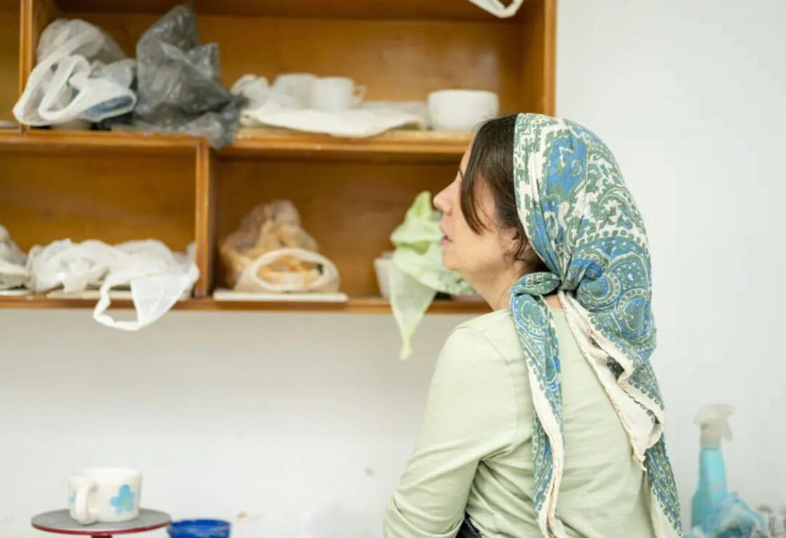

Aprendé
E-Shop
Clases presenciales de Alfarería en Torno
Descubrí lo que sos capaz de hacer con tu creatividad y tus propias manos.
Piezas artesanales a pedido
Decora tu casa con obras artesanales creadas por manos con experiencia.

Sobre el taller de Mono
En el taller lo que se busca es representar en la cerámica lo que la mente fabrica cuando uno la deja expresarse. Siempre manteniendo un estándar de detalle y prolijidad, pero sin perder el aspecto artesanal y humano de cada pieza. Es por eso que se hace todo en torno, desde cero, sin moldes. Hace 20 años que trabajo con cerámica y cada día me apasiona más.